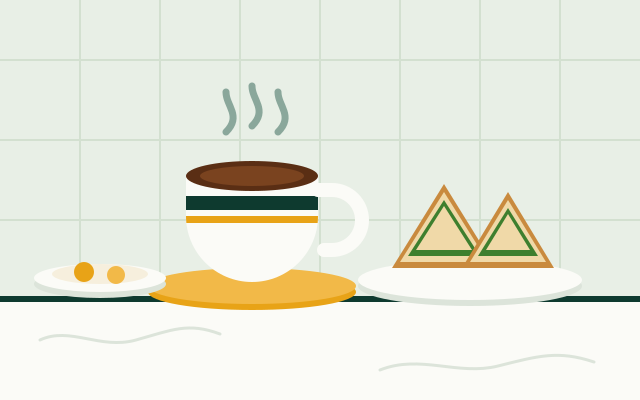

Kuala Lumpur · est. 1962
Four words get you the exact coffee you want.
A kopitiam order is not a sentence, it is a code. Each word switches one thing: the milk, the sugar, the ice. Learn the four switches and you can order anything on the board without pointing at it.
Order chit — table 7
kopi C kosong peng
- kopi
- coffee
- C
- evaporated milk
- kosong
- no sugar
- peng
- iced
What is actually in the cup
Kopitiam coffee is not espresso. The beans are wok-roasted with sugar and a little margarine until they turn almost black, which is where the smoky, slightly bitter edge comes from. The grounds are then steeped in a long cloth filter, poured back and forth between two pots to keep the temperature even, and served over whatever combination of milk and sugar you asked for.
The default cup already contains condensed milk. Everything else on the board is a modification of that default, which is why the order codes are so short.

Order decoder
Mix and match the modifiers. The drink name always comes first.
| Code | Literal meaning | What arrives |
|---|---|---|
| kopi | coffee | Coffee with sweetened condensed milk |
| kopi O | "O" from Hokkien o, black | Black coffee with sugar |
| kopi C | "C" from Hainanese sian, fresh | Coffee with evaporated milk and sugar |
| kosong | empty | Adds nothing — removes the sugar |
| peng | ice | Served iced, in a glass |
| gau | thick | Extra strong, less water |
| teh tarik | pulled tea | Milk tea poured between two pots until foamy |
How to order like a regular
-
Find a table first
Sit down before you order. The drinks person comes to you.
-
Say the drink, then the modifiers
Always in that order: teh, then C, then kosong, then peng.
-
Order the food separately
Drinks and food are usually run by different stalls under the same roof, with separate bills.
-
Pay when the drink lands
Cash is handed over at the table, not at a counter. Keep small notes.